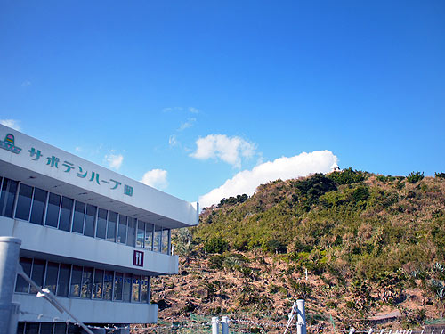
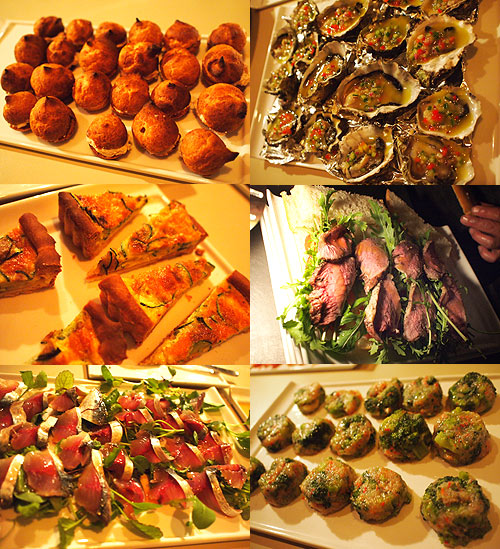
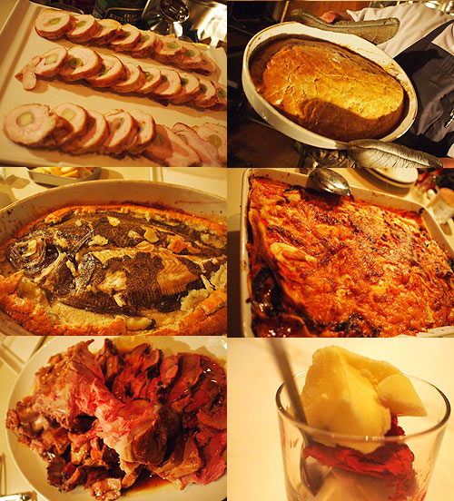
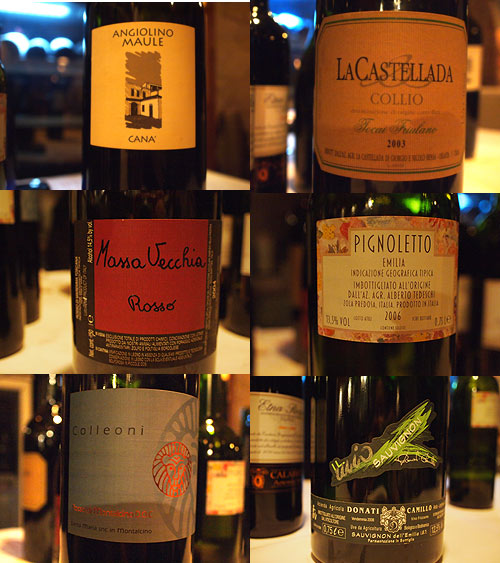
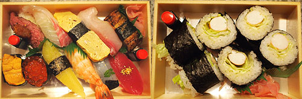
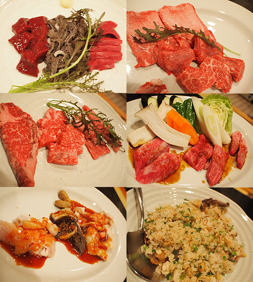
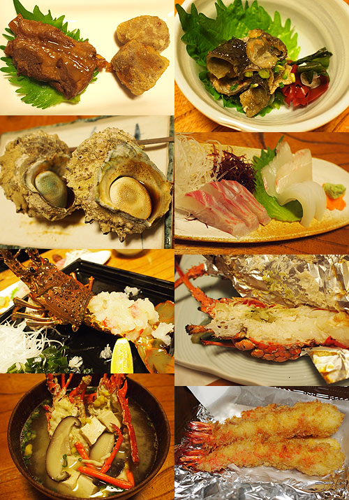

{kind=link}

仕事納め後、狂食祭に突入いたしました。 祭り会場は九州宮崎。 というわけで、まずはイタリアン。アクアミネラーレ。クリスマスワイン会。{kind=link}

フォアグラクリームのシュー、生牡蠣、キッシュ、ローストビーフサンドイッチ、サバのマリネ、エビとブロッコリーのゼリー寄せ{kind=link}

ポークのロールなんとか、カレイの包み焼き解体前、解体後、ラザーニア、豚かたまり肉どっかん。{kind=link}

ワインはマグナムサイズが揃っていて、なんともクリスマスパーティな豪華さ！ ・Camillo Donati / Sauvignon Frizzante 2008 (1500ml) ・La Biancara / Sassaia 2007 Senza SO2 (1500ml) ・Alberto Tedeschi / Pignoletto 2006 ・La Castellada / Collio Tocai Friulano 2003 (1500ml) ・Santa Maria / Rosso di Montalcino 2007 (1500ml) ・La Biancara / Cana' 2002 (1500ml) ・Massa Vecchia / Rosso 2004 (1500ml) ・La Calabretta / Etna Rosso 2000 Massa Vecchia がかなり好み。 余談だけどこのお店は美人さんのお客さまが多くて楽しい。 別の日の夕食は持ち帰り寿司。喜鶴寿司。{kind=link}

宮崎牛のにぎりがえらく美味しい。あとはウナギにウニがかなり、うんまいの。 ワインを飲むこと前提でいたのだけど（だから持ち帰り）数の子が入っていて真っ青に… 数の子とワインって尋常ではないぐらい合わない！ なにか合うワインあるのかなー？ 興味のある人は試してみて。白ワイン×数の子。 びーーーーーーーーーーっくりするぐらい口の中が生臭くなる。 地雷マリアージュ。 そんでもって、焼肉。みょうが屋{kind=link}

部位それぞれがきちんと個性を出しているのがしみじみ楽しい。 新鮮さももちろんだけど、きちんとした処理ゆえにそのお肉100%以上の実力を演出してくれているんだよね。良いお店です。でも白ご飯にガッツリタレ焼き肉が食べたいときには、ちょっと上品すぎちゃうかも。 この日はレバ刺し、牛タンが白眉 そして伊勢海老。野島食堂。{kind=link}

豚バラ煮付け（豚なんこつかな？）、里芋とこんにゃくの揚げ物、めじなの皮のポン酢仕上げ 焼きさざえ、お作り（めじな、イカ）、伊勢エビお作り、ホイル焼き、味噌汁、お土産にしたエビフライ。 それにしても良く食べる。 子どものときにひもじかったからか、食い意地はほんとーーに人一倍！ 指をくわえてテレビの料理番組をみたり、レシピ本を眺めていたハラペコだった私。 今、好きな物を好きなだけお腹いっぱい食べることができて、本当に幸せ。 これから年を取ると食べたくても食べられないものが出てくるのかな。 それまでもう少し、自分を甘やかしてあげようっと。